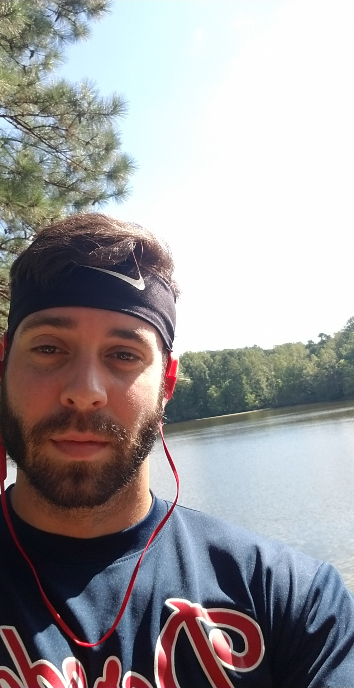
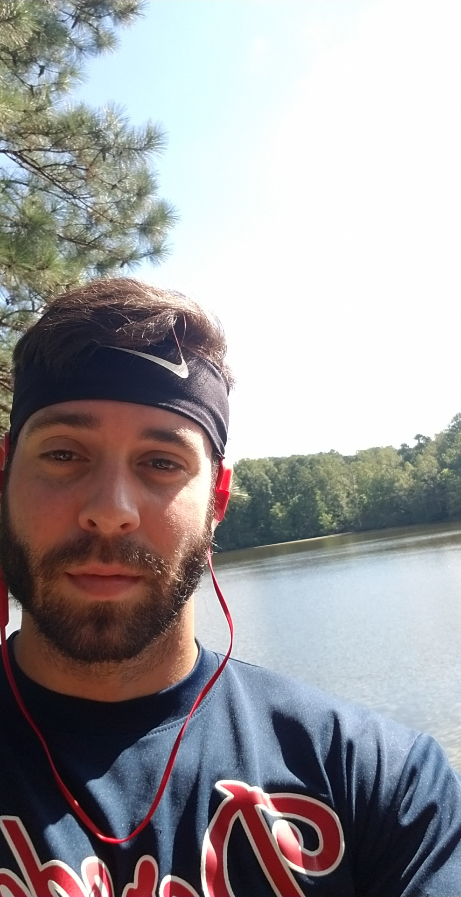
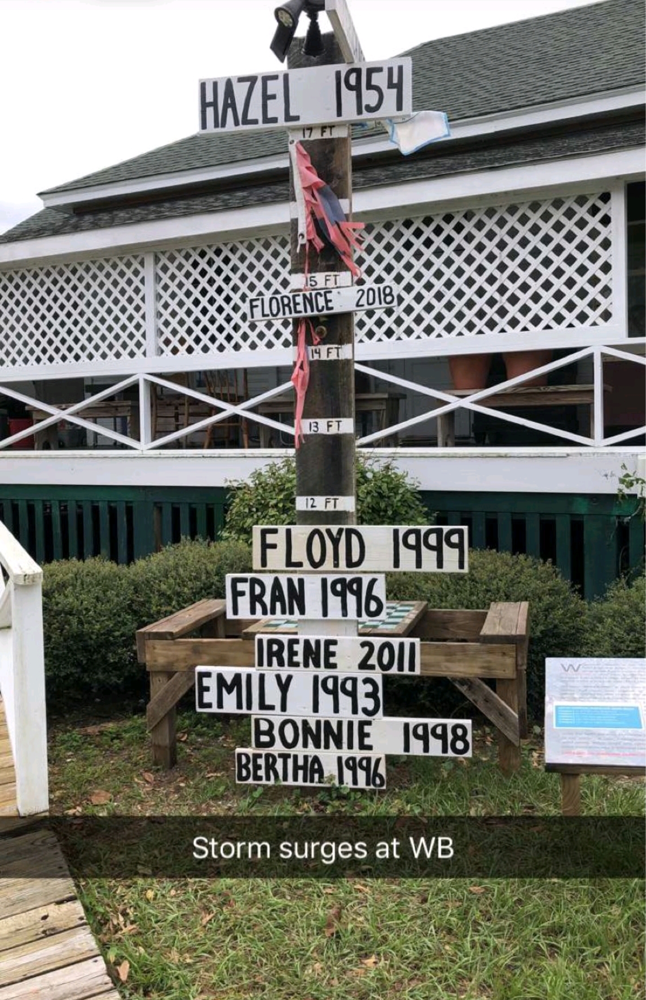
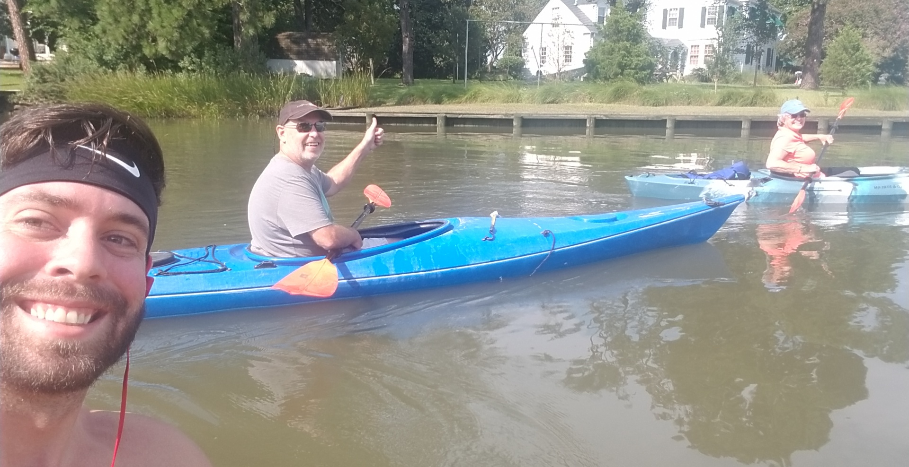
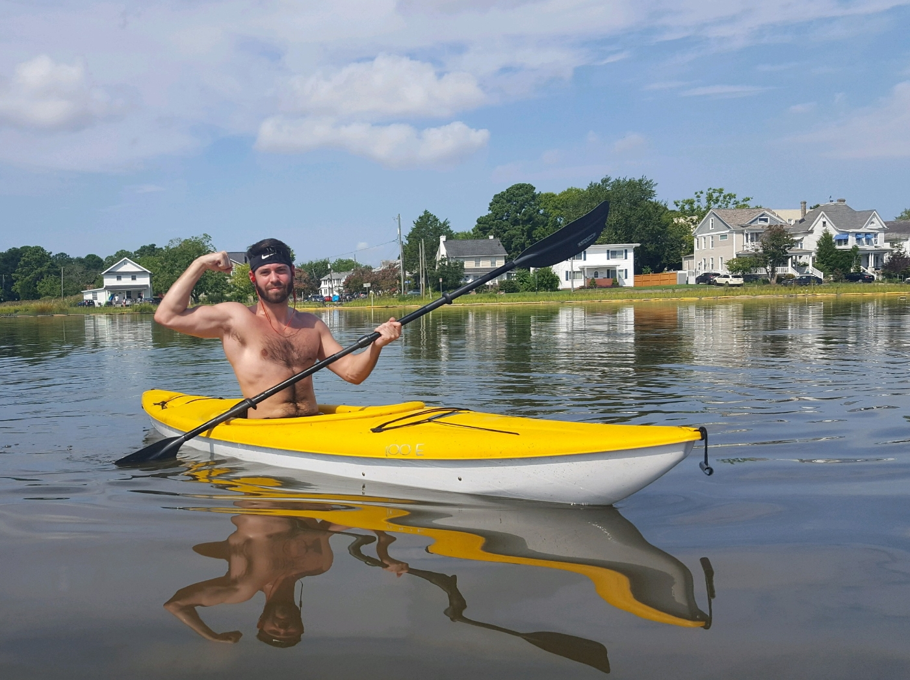
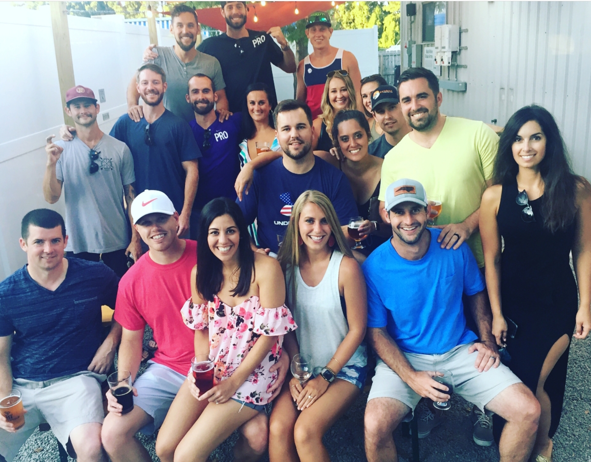
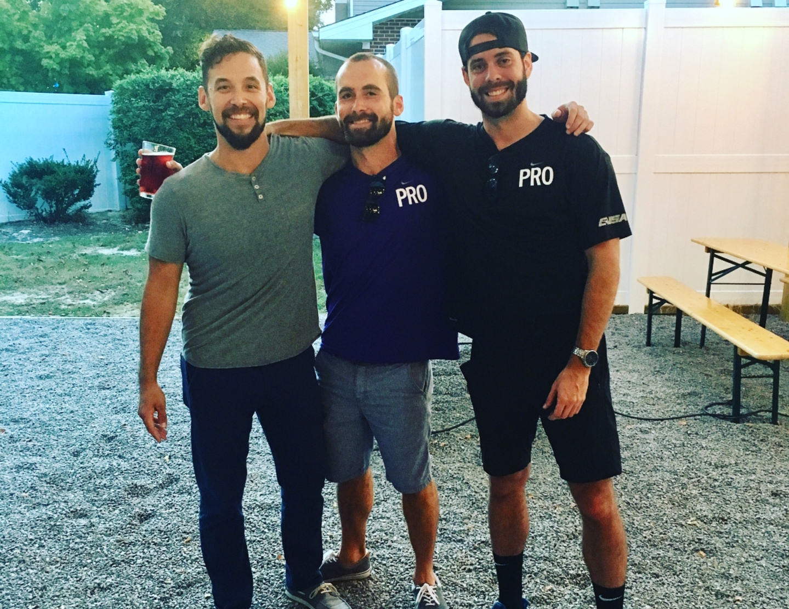

The weather this week was phenomenal. I went to William B. Umstead State Park in Raleigh on Saturday - a beautiful state park with miles of trails, streams, and a lake. I ran most of the time, though I stopped to take a few pictures and bask in the weather.


 

Week 4 was back to normal in Raleigh. Lifetime reopened and the rain stopped so I was able to get to the gym. My roommate, Drewmo, and I decided to sign up for a marathon to run for Paul. Since Paul is a runner and was training for the New York Marathon, we will give it a shot. Ok maybe not a marthon, I can't do that yet. But we'll do the half marathon. Yea we'll start with the 10k, that's a start.
Week 3 had some complications in the form of Hurricane Florence. I was able to work out in our apartment complex; we were pretty much confined there all week. Thankfully, we were fine here in Raleigh, and the storm dipped south so it missed Tidewater. Unfortunately, it did wreck the eastern part of the Carolinas, including Wilmington. The Carolinas are recovering and are #PAULSTRONG.
Week 2 was another #strong one. I started running to the gym; it's only about a mile away but that's more than I've ran in a long time. It felt like upper 90 degrees here all week, so it's safe to say I sweat out all the 'Pints for Paul' and then some.
I just got back from visiting Paul at the University of Maryland Medical Center. I decided to make this website to keep myself accountable and make sure I do something active every day. I walked to the gym Monday through Friday and worked out each day. On Saturday, I was at home in Virginia and went out kayaking with my mom and Uncle Dave.
 On Sunday, I was in Wilmington, NC for 'Pints for Paul', a fundraiser at a local brewery - we drank a LOT of beers for Paul.
 